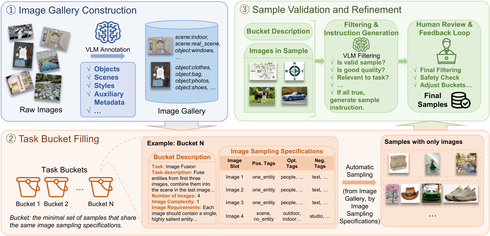
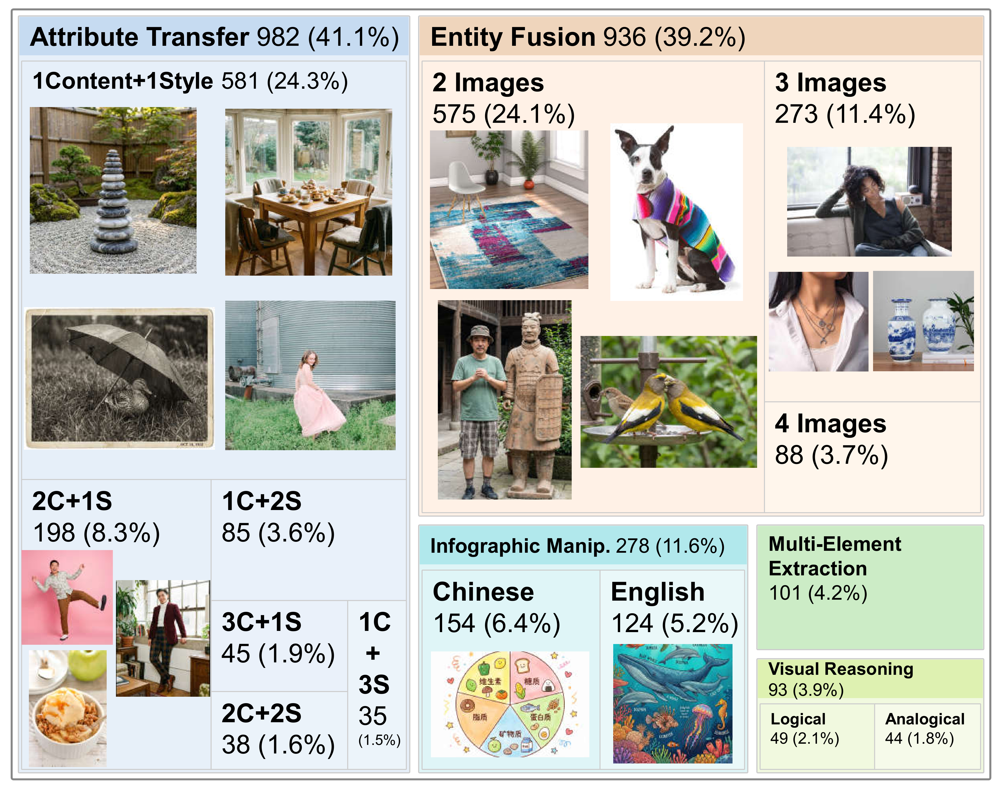
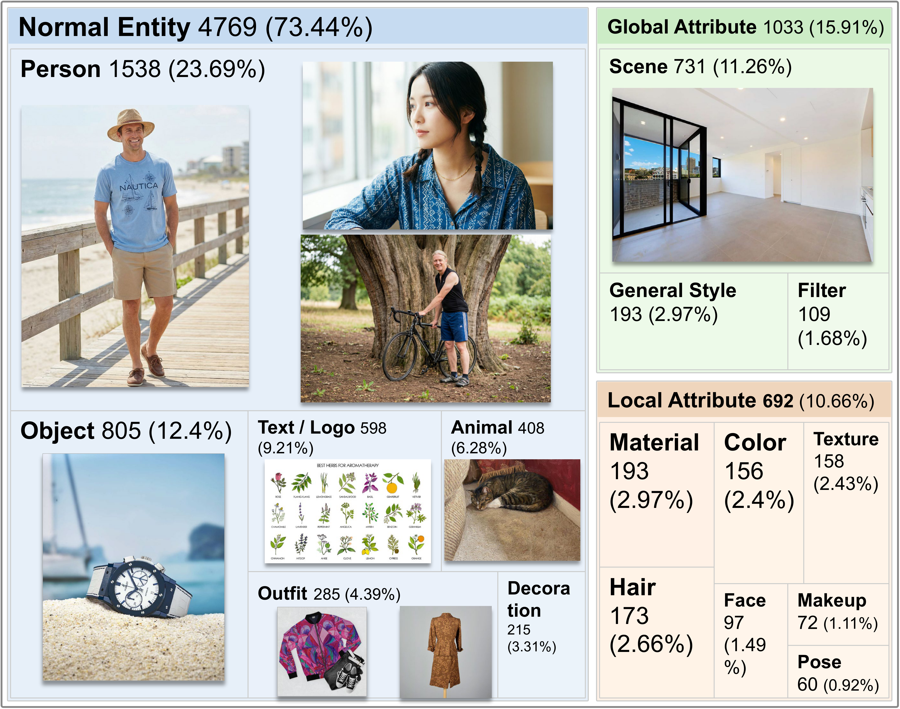
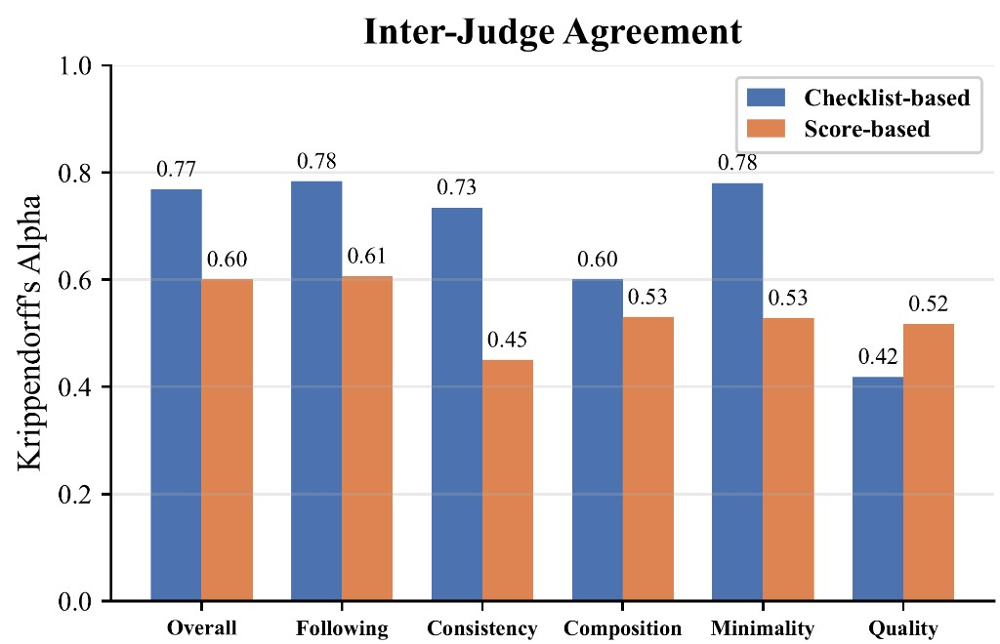
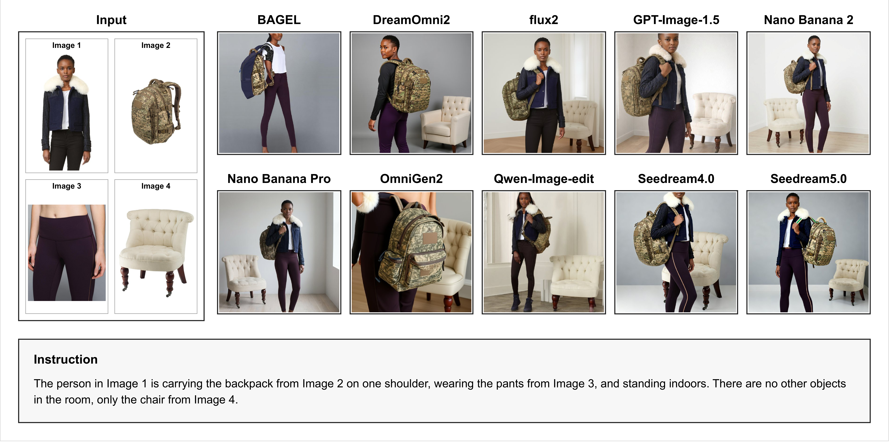
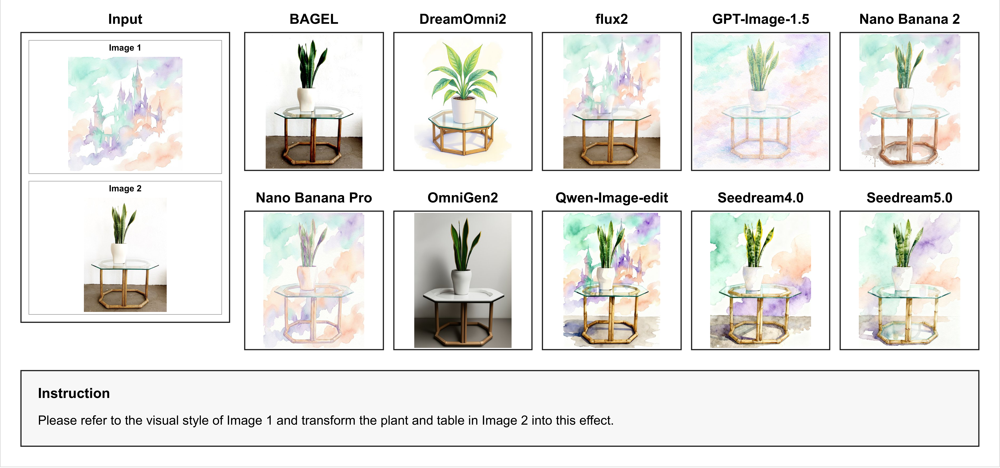
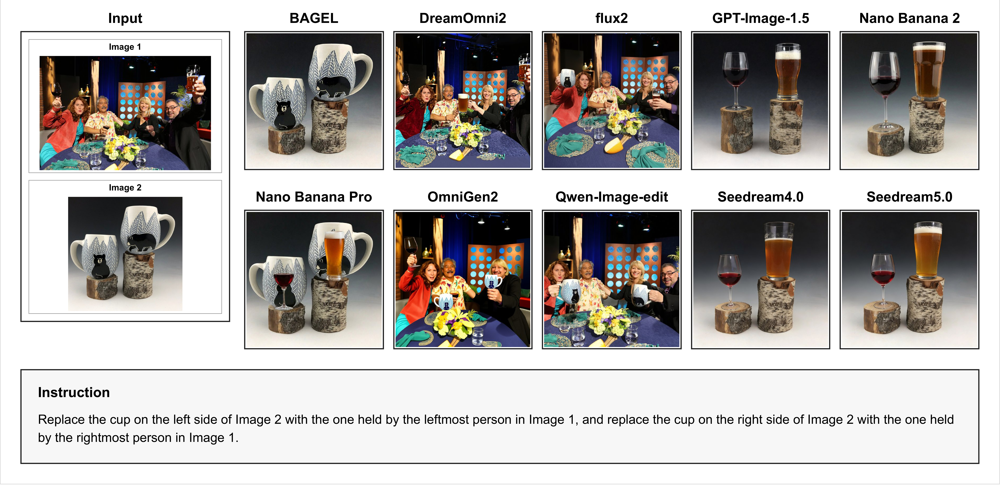
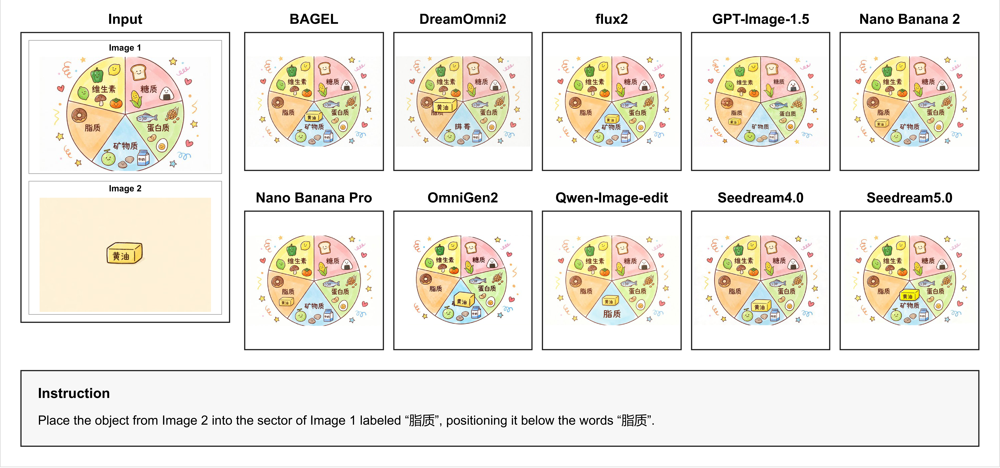
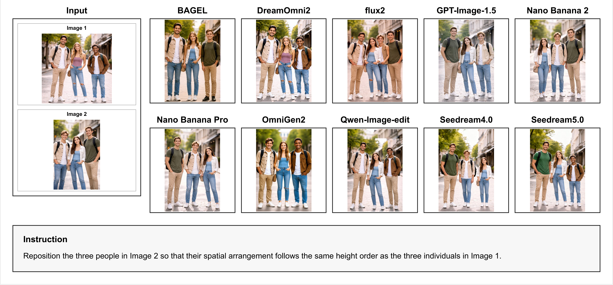

Multi-Dimensional Tasks
Covers five major challenge families beyond simple fusion-only settings.
A Multi-Dimensional Benchmark for Multi-Reference Image Generation
An open-source work for multi-reference generation evaluation
Image generation models have rapidly advanced, with many models now supporting generation conditioned on multiple reference images and textual instructions. Such models enable a wide range of applications, including entity fusion and attribute transfer across images. However, existing benchmarks for multi-reference image generation rely on limited evaluation dimensions and fail to capture the diverse challenges of the task. To address this limitation, we propose MDMR-Bench, a Multi-Dimensional benchmark for Multi-Reference image generation. MDMR-Bench is designed based on realistic usage scenarios and consists of multiple evaluation subsets spanning diverse dimensions of multi-reference image generation, including (1) common entity fusion and attribute transfer, (2) multi-element extraction from a single image, (3) infographic manipulation, and (4) visual reasoning-intensive generation. This design enables systematic analysis of model capabilities and failure modes across different challenge dimensions. Furthermore, to achieve more reliable and interpretable evaluation, we introduce a checklist-based evaluation protocol that decomposes generation quality into fine-grained evaluation aspects. Instead of relying solely on holistic scoring, our framework uses structured checklists composed of both global-level and atomic-level queries, enabling more diagnostic assessment of model performance. By benchmarking both open-source and proprietary models, we demonstrate that MDMR-Bench provides fine-grained insights into model performance across different dimensions. The dataset is publicly available at Kaggle. The code is released at GitHub.
Covers five major challenge families beyond simple fusion-only settings.
Uses interpretable yes/no diagnostics with global and atomic granularity.
Reveals capability gaps and failure modes across models and task dimensions.





✔ dedicated coverage, △ partial or incidental coverage, ✗ no coverage.
| Benchmark | Size | Entity Fusion | Multi-Element Extraction | Attribute Transfer | Infographic Manip. | Visual Reasoning | Global Eval. | Atomic Eval. | Metrics |
|---|---|---|---|---|---|---|---|---|---|
| DreamBooth | 75 | ✔ | ✗ | △ | ✗ | ✗ | ✔ | ✗ | CLIP Fidelity |
| DreamOmni2 | 319 | ✔ | ✗ | ✔ | △ | ✗ | ✔ | ✗ | Score-based |
| MICo-Bench | 897 | ✔ | ✔ | ✗ | ✗ | ✗ | ✔ | ✗ | Score-based |
| MultiBanana | 3769 | ✔ | ✗ | ✔ | △ | ✗ | ✔ | ✗ | Score-based |
| VTEdit-Bench | 24220 | ✔ | ✗ | △ | ✗ | ✗ | ✔ | ✗ | Score-based |
| MDMR-Bench (Ours) | 2390 | ✔ | ✔ | ✔ | ✔ | ✔ | ✔ | ✔ | Checklist-based |
| Model | Following | Consistency | Composition | Minimality | Quality | Overall |
|---|---|---|---|---|---|---|
| Closed-source Models | ||||||
| Nano Banana Pro | 91.2 | 84.6 | 83.9 | 80.4 | 87.0 | 85.1 |
| Nano Banana 2 | 88.0 | 82.0 | 81.2 | 72.1 | 84.1 | 81.2 |
| Seedream 5.0 | 86.2 | 74.0 | 81.1 | 71.5 | 84.3 | 78.8 |
| Seedream 4.0 | 85.3 | 73.4 | 80.7 | 69.7 | 82.8 | 77.8 |
| GPT-Image-1.5 | 90.3 | 72.1 | 85.9 | 56.8 | 85.6 | 77.5 |
| Open-source Models | ||||||
| FLUX.2 | 46.5 | 50.0 | 51.1 | 51.5 | 63.8 | 51.3 |
| Qwen-Image-Edit | 47.7 | 46.4 | 51.5 | 49.1 | 61.3 | 49.9 |
| BAGEL | 37.3 | 40.7 | 34.7 | 58.1 | 39.8 | 41.9 |
| DreamOmni2 | 43.9 | 31.0 | 49.8 | 33.1 | 63.0 | 41.9 |
| OmniGen2 | 30.1 | 22.2 | 34.6 | 21.1 | 42.1 | 28.6 |
| Model | Entity Fusion | Multi-Element Extraction | Visual Reasoning | Attribute Transfer | Infographic Manip. | Overall |
|---|---|---|---|---|---|---|
| Closed-source Models | ||||||
| Nano Banana Pro | 84.9 | 87.2 | 85.6 | 83.3 | 84.7 | 85.1 |
| Nano Banana 2 | 82.5 | 85.6 | 75.9 | 82.4 | 79.8 | 81.2 |
| Seedream 5.0 | 77.9 | 81.3 | 83.6 | 78.6 | 72.5 | 78.8 |
| Seedream 4.0 | 77.9 | 83.1 | 83.7 | 76.6 | 67.9 | 77.8 |
| GPT-Image-1.5 | 81.8 | 78.4 | 76.5 | 82.3 | 68.5 | 77.5 |
| Open-source Models | ||||||
| FLUX.2 | 73.5 | 54.1 | 36.7 | 47.9 | 44.0 | 51.3 |
| Qwen-Image-Edit | 66.9 | 55.3 | 44.3 | 44.1 | 39.2 | 49.9 |
| BAGEL | 41.5 | 39.9 | 52.1 | 35.6 | 40.5 | 41.9 |
| DreamOmni2 | 50.0 | 44.2 | 34.2 | 43.1 | 38.0 | 41.9 |
| OmniGen2 | 44.9 | 29.0 | 22.7 | 26.9 | 19.7 | 28.6 |
Representative cases from benchmark subsets.





https://arxiv.org/abs/xxxx.xxxxx
https://www.kaggle.com/datasets/6f695be8363ee17928c25f36fa976fd10f976f9f6d4925bc0df74f38dfce268c
https://github.com/your-org/your-repo
@misc{zheng2026mdmrbench,
title = {MDMR-Bench: A Multi-Dimensional Benchmark for Multi-Reference Image Generation},
author = {Zheng, Bowen and Lin, Jintao and Yi, ChangHeng and Yang, Haoran and Huang, Binxiao and Lei, Chenyang and Liu, Rui and Liu, Xihui},
year = {2026},
note = {Preprint}
}